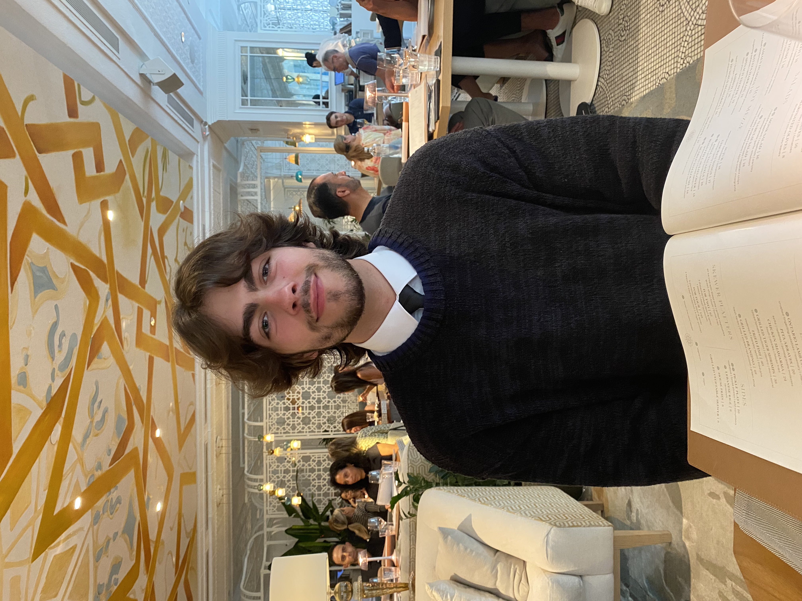

|  | Jacob AragaoUniversity of Mcgill
|
"Hardworking and passionate student/co-op seeker with strong organizational skills eager to secure entry-level programming position. Motivated to help team achieve company vision."
AUGUST 2022 - APRIL 2027, MONTREAL, QC.
SEPT 2018 - JUNE 2022, TORONTO, ON.
Home and Castle Law Firm / Accounting Assistant
JULY 2019 - PRESENT, TORONTO, ON.
Gained accounting experience via use of law practice management software "PCLaw". Used critical thinking to summarize legal claims and evaluate relevant data.
Provided free tutoring in Math, Science and Language courses. Aided multiple students in achieving higher grades and alleviated academic anxiety through high school peer tutoring program.
Coached/supervised youth ball hockey teams for a community league (EMBHL) resulting in multiple successful and enjoyable seasons.
Assistant coached a team of talented young soccer players in my community through the EYSL.
Here are a few of my interests outside of work/school.